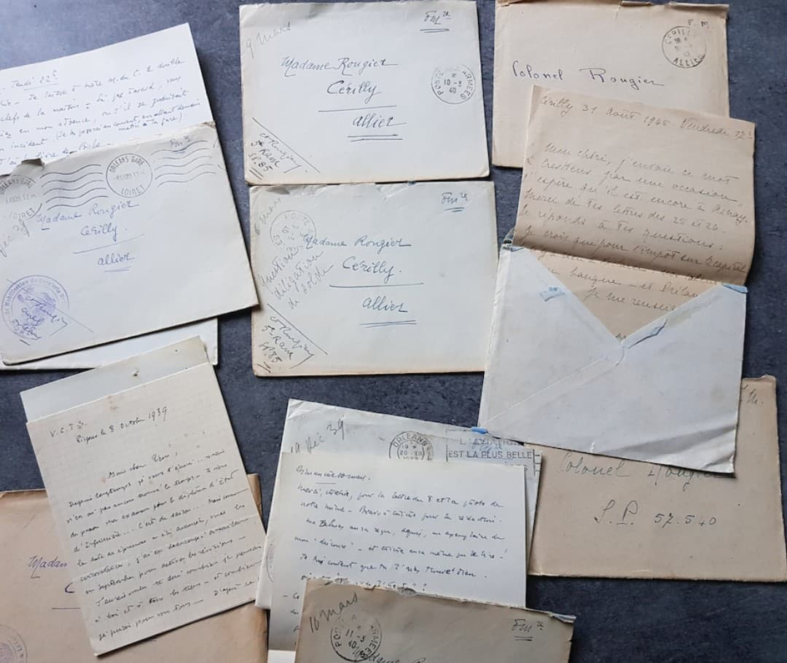

La correspondance joue un rôle essentiel pour le soldat français de 1939–1940. Écrire à la famille permet de maintenir le moral, de donner des nouvelles et de conserver un lien avec la vie civile. Les objets d’écriture, souvent civils, sont rangés dans la musette et utilisés dès que le soldat trouve un moment de calme.

Utilisées pour écrire à la famille, essentielles au moral du soldat.
Papier civil, souvent plié dans la musette pour rédiger les correspondances.
Porte-plume classique des années 30–40, utilisé avec un encrier.
Encrier portable en verre ou métal, indispensable pour écrire proprement.